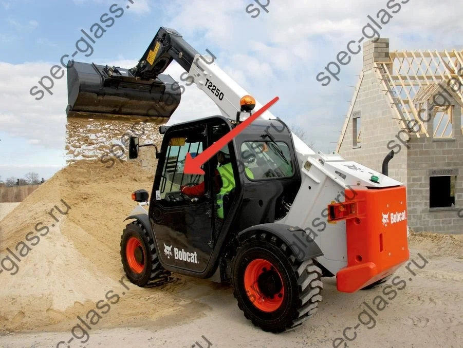

Лобовое стекло BOBCAT 320
Подбор по модификации кабины и году выпуска. Возможна поставка со склада.
Каталожный номер7120401
Внутренний артикулBobcat 011 5мм
МодельS450, S510, S530, S550, S570, S590, S595, S630, S650, S740, S750, S770, S850 T450, T550, T590, T595, T630, T650, T740, T750, T770 T870
Тип техникиМини погрузчик
Год2008-2011
Тип стеклаЗакаленное
Установочное положениеСтекло лобовое
Размер1060х800
Технологические отверстия11
Изгиб стеклаимеет радиус
Шелкографияшелк